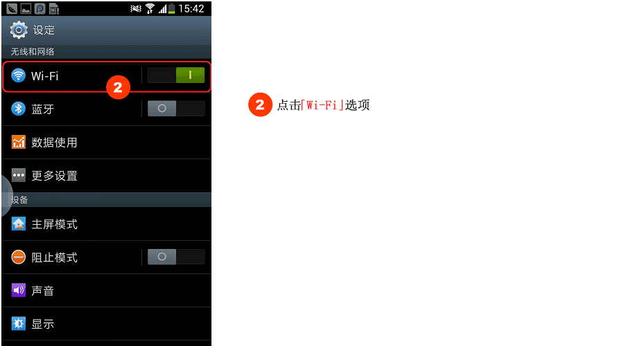
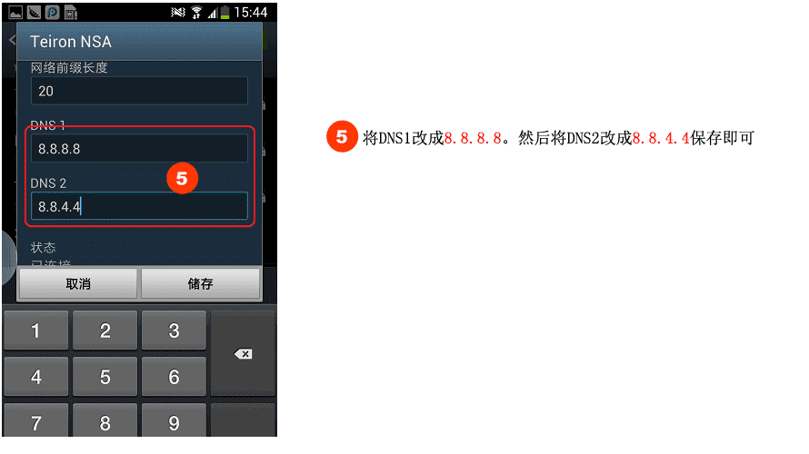

手动修复路由器DNS教程
要怎么样手动修复路由器中DNS的地址？
近日很多用户电脑遇到网络被劫持，要怎么办？
今天天使就和大家一起以TP-Link路由器为例子，一步一步教大家如何手动修改路由器的DNS地址：
首先打开浏览器，在地址栏中输入：192.168.1.1 [如图]，然后按回车键确认打开。
接下来在弹出的对话框中输入您路由器的用户名和密码，点击“确定”[如图]
进入路由器设置界面后，然后我们再点击左侧“网络参数”展开更多设置，之后即可看到“WAN口设置”选项了，我们再点击左侧的WAN口设置，在WAN口设置界面底部还有一个“高级设置”入口，我们点击进入即可进入到路由器DNS设置界面了，如下图：
最后，我们只需要勾选上“手动设置DNS服务器”，然后填写DNS服务器为8.8.8.8，备用DNS服务器为8.8.4.4，完成后点击底部的保存按钮即可[如图]。
手工修复win10系统dns教程
手动修复windows 8.1 系统dns教程
手工修复win7系统dns教程
手工修复windows XP系统dns教程

手动修复安卓手机DNS教程
当你在 iOS 设备的浏览器中输入某个网站地址时，设备将执行 DNS 查找操作来跳转至正确的网站。DNS 服务器负责处理该查找服务，它可以将数字 IP 地址转换成我们都熟悉的域名。
虽然大多数互联网服务商会提供自己的 DNS 服务器，但实话说，它们的速度并不敢恭维。因此你可以通过手动更改自己设备的 DNS 设置，来加快你访问网站的速度。今天我们来谈谈如何直接在 iOS 设备上更改设置 DNS。
＃你必须连接到 Wi-Fi 网络，才可以更改设备的 DNS 设置。
防劫持说明，手动修复路由器DNS教程
有的时候Android手机或平板电脑需要修改DNS服务器能正常上网，以及一些自己开发的应该需要在局域或者外网服务器有相同域名的解析问题，我们为了能正确访问服务器的域名就要修改DNS服务器地址。
＃你必须连接到 Wi-Fi 网络，才可以更改设备的 DNS 设置。
 